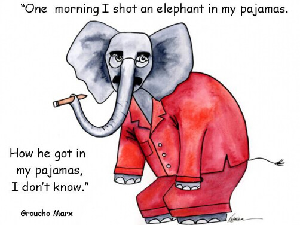
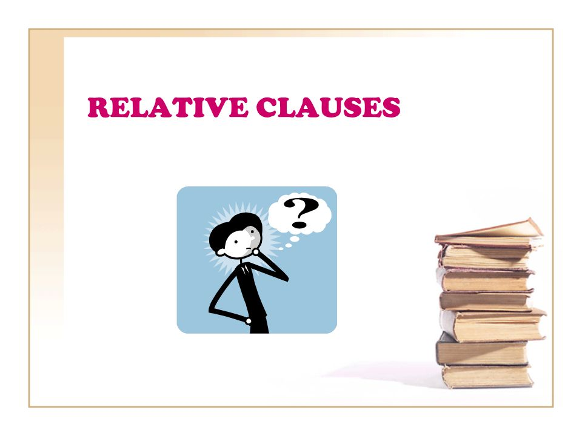
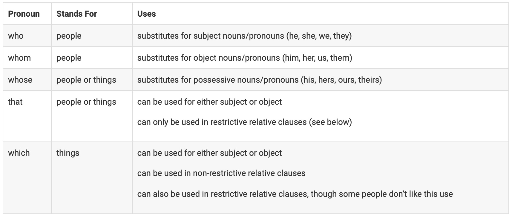
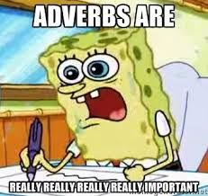
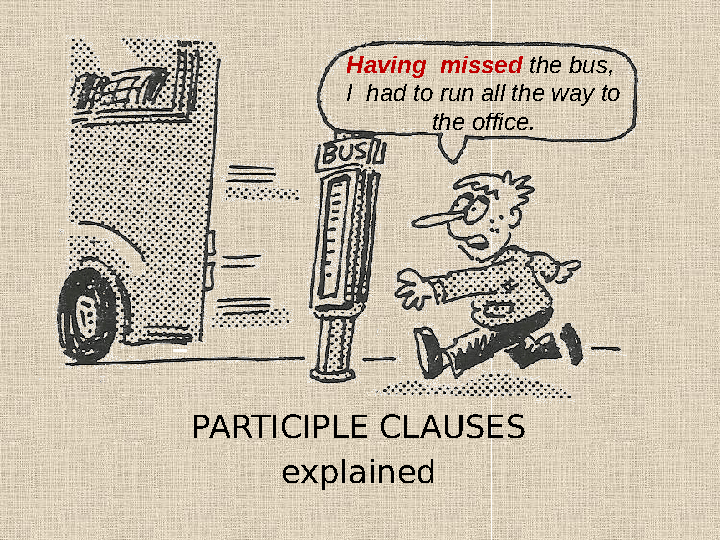

Grammar Lesson Plan: Modifiers, Relative Clauses (That vs Which), Adjectival and Adverbial Phrases/Clauses, Participial Phrases vs Gerunds
Hi! My name is Kent Canonigo (he/him), and this is my final project submission for Dr. Shapiro’s WRPR 110 course.
If you’re reading this blog post, I’m sure you’re already interested in learning more about grammar! By the end of this blog post, you’ll take away the usage of modifiers, types of relative clauses, differences between adjectival and adverbial phrases/clauses, and participial phrases vs gerunds.
Feel free to use the Table of Contents on the side to navigate to the different learning goals!
Modifiers
Grammatical modifiers take in the form of words, clauses, and phrases that provide additional information to sentences. In essence, they can modify several parts of speech including nouns, verbs, adjectives, and adverbs!
However — as shown in the image above — when misplaced, modifiers can be dangling and is a common grammatical error to blur the interpretation of sentences. The writer either shot an elephant while in their pajamas, or they shot an elephant that was in their pajamas. Hence, the little note: “How he got in my pajamas, I don’t know” references the elephant’s misinterpretation.
Dangling Modifiers
NOTE: A dangling modifier is “a word of phrase that modifies a word not clearly stated in the sentence.” 1
As explained by TED-Ed, the misuse of modifiers can hurt your writing. It’s crucial to know when and how to use modifiers correctly in order to enhance the meaning and effectiveness of your sentences. 2
Here are some examples of dangling modifiers:
- Walking through the park, the squirrel stole my sandwich.
- Eating pizza at the park, my phone rang and startled the ducks.
- Driving home late the other night, a deer suddenly appeared in our headlights.
Some strategies in correcting dangling modifiers include:
- Clearly identifying the subject of the sentence
- Changing the order of the doer and the action
- Combining the phrase and main clause into one
We can revise the previous sentences as:
- While walking through the park, I saw a squirrel steal my sandwich.
- While I was eating pizza at the park, my phone rang and startled the ducks.
- Driving home late the other night, we suddenly saw a deer in our headlights.
Knowledge Check
YOUR TURN: Identify if the sentence includes a dangling modifier. If so, revise and correct the sentence using the strategies mentioned above!
- After studying all night, the exam was easy.
- Having finished the assignment, Jill turned on the TV.
- Barking loudly, the owner hushed the dog.
- Having arrived late for practice, the team captain needed a written excuse.
ANSWERS HERE
There is a dangling modifier! One revised sentence could be: After studying all night, I found the exam easy.
There is no dangling modifier!
There is a dangling modifier! One revised sentence could be: Barking loudly, the dog was hushed by its owner.
There is no dangling modifier!
More Resources
Here are more resources to correct dangling modifiers!
Relative Clauses

Relative clauses are important because they can provide necessary or additional information about nouns/noun phrases. Additionally, they connect some previous information already known to the reader by the use of relative pronouns such as who, whom, whose, which, and that. Shown below is a table that provides the functionalities of the relative pronouns. 3

To learn more about relative clauses, here’s a video as explained by KhanAcademy! 4

There are two types of relative clauses: restrictive and nonrestrictive. The section below describes the differences between the two relative clauses.
Restrictive vs Nonrestrictive Clauses
Restrictive Clauses
Restrictive clauses provide necessary information for a noun to be “complete”. In this case, “complete” is defined as the noun needing the information for it to be fully defined. Restrictive relative clauses are also known as essential clauses.
NOTE: Restrictive clauses do not require commas and should not be separated from the rest of the sentence.
Here are a few examples of restrictive clauses: 5
- The student who sits in the back of the room asks a lot of questions.
- The results that I obtained may invoke positive social change.
- The journalist whose story I read yesterday has won prizes for her work.
Try phrasing the sentences without the restrictive clauses. Do they still make sense?
For example, in the first student, if we removed the restrictive clause, the sentence would then be: The student asks a lot of questions. This sentence is now incomplete because we don’t get the context of which student asked the question. Hence, the restrictive clause in that sentence who sits in the back of the room provides readers more information about which of the students in the classroom asked a question.
YOUR TURN: Briefly identify the restrictive clauses in the sentences below:
- The man who lives next door is a doctor.
- The dog that ate my homework is a poodle.
- The car that was stolen last night was a red Honda Civic.
ANSWERS HERE
The man who lives next door is a doctor.
The dog that are my homework is a poodle.
The car that was stolen last night was a red Honda Civic.
Nonrestrictive Clauses
In contrast, a nonrestrictive clause is a clause that provides additional information about a noun or pronoun, but is not essential to the meaning of the sentence.
NOTE: Nonrestrictive clauses often require commas and can be separated from the rest of the sentence.
Here are a few examples of nonrestrictive clauses:
- I want to thank my father, Mark Smith, for all of his love and support.
- The hypothesis, which I tested throughout the research, was rejected.
- I have found the article, which I have been looking for.
Try removing the nonrestrictive clauses from the sentences. Do they still hold completeness without the nonrestrictive clause? For example, in the second sentence, removing the nonrestrictive clause would posit the sentence as: The hypothesis was rejected. This sentence without the nonrestrictive clause which I tested throughout the research still holds completeness because there is a clear understanding that the noun, hypothesis, was rejected; the nonrestrictive clause further defines what type of hypothesis it was — the one that the author had tested throughout their research.
Knowledge Check
YOUR TURN: Briefly identify the nonrestrictive clauses in the sentences below and reconstruct the sentences with correct usage of commas, if necessary:
- My friend who lives in New York is coming to visit me next week.
- The cat sleeping on the couch woke up when I came home.
- The book which I read last week was very good.
ANSWERS HERE
My friend, who lives in New York, is coming to visit me next week.
The cat sleeping on the couch woke up when I came home.
The book, which I read last week, was very good.
More Resources
Here are additional resources on restrictive vs nonrestrictive clauses:
That vs Which Clauses
Following the section on restrictive and nonrestrictive clauses, there is a disctinction between the usage of that and which for relative clauses. 6
NOTE: Generally, we use that to introduce restrictive clauses, and which to introduce to nonrestrictive clauses. Don’t forget the punctuation associated with each type!
To learn more about that vs which clauses, here’s a video as explained by PurdueOWL! 7
Here are a few examples differentiating that and which clauses:
THAT:
- Brad’s sweater [noun] that has fancy elbow pad [restrictive clause] was a birthday gift from his sister.
- Laptops [noun] that are used for gaming purposes [restrictive clause] are usually more expensive.
- The chair [noun] in my kitchen that has a broken leg [restrictive clause] is dangerous to sit on.
In these examples, the restrictive clauses are introduced by that and are essential information to the sentence.
Let’s look at how which is used in nonrestrictive clauses!
WHICH:
- Stacy’s truck [noun], which is painted red [nonrestrictive clause], has a dent in the back bumper.
- Paul’s favorite café [noun], which serves excellent coffee and paninis [nonrestrictive clause], is in Memphis, Tennessee.
- The human heart [noun], which contains four valves [nonrestrictive clause], weighs approximately eleven ounces.
Notice the use of commas to separate the nonrestrictive clause in the sentences!
Knowledge Check
Here are some practice problems to check your knowledge on that vs which clauses. 8
YOUR TURN: For each of the sentence below, check whether they need that or which and if any punctuation changes are necessary.
- My first class on Mondays (that/which) starts at 10:30 is my chemistry lab.
- Have you heard of the new band (that/which) uses glitter cannons at their concerts?
- The new gym (that/which) has twelve racquetball courts is only five minutes from my house.
ANSWERS HERE
In the first sentence, we use which because it doesn’t make sense to have multiple classes starting at 10:30. This means the clause is non-restrictive.
In the second sentence, because there are many, many bands, we need to use that to specify the one we’re talking about, making it a restrictive clause.
The third sentence is a trick! Depending on what you’re trying to say, you may use either word! If there are multiple gyms five minutes from your house, you would use that to specify the one with the racquetball courts. However, if there is only one gym five minutes from your house, the clause is non-restrictive, and you would use which.
Adjectival and Adverbial Phrases and Clauses

In this section, we’ll dive into adjectival and adverbial phrases/clauses.
Recall that a clause contains both a subject and a verb, whereas a phrase does not. Hence, clauses (e.g. independent clauses) can sometimes stand alone in a sentence, but phrases would be components to a sentence.
Particularly, adjectival clauses/phrases answer the questions which one, what kind, how much, or how many. In contrast, adverbial clauses/phrases usually answer the questions where, when, how, to what extent, and why an action is being performed. 9
Both adjectival and adverbial clauses must maintain correct punctuation as determined by the information’s necessity!
NOTE: Adjectival phrases/clauses tend to be more closer to the noun(s) it describes , whereas adverbial phrases/clauses are generally more mobile in the sentence!
Here are a few examples of adjectival phrases/clauses and adverbial phrases/clauses:
ADJECTIVAL PHRASES/CLAUSES:
- The Eiffel Tower, which is located in Paris [adjectival clause], is a famous landmark.
- The book that I borrowed from the library [adjectival clause] is due tomorrow.
- The house on the corner [adjectival phrase] is painted yellow.
- The man with a hat [adjectival phrase] is my uncle.
Try to find which noun the adjectival phrases/clauses are describing, what question it answers, and if they are restrictive or nonrestrictive!
ADVERBIAL PHRASES/CLAUSES:
- When spring arrives [adverbial clause], the flowers bloom.
- I will go to the store after work, if it’s not too late [adverbial clause].
- I will meet you after dinner [adverbial phrase].
- He exercises daily for better health [adverbial phrase].
Again, try to determine what the adverbial clause is answering in the example sentences. Does it answer where an action is being performed? Why? When? How? To what extent? These should be questions that you can ask yourself to determine if a clause is truly an adverbial clause!
Knowledge Check
Here are some practice problems to check your knowledge on adjectival vs adverbial phrases/clauses. 10
YOUR TURN: For each of the sentence below, check whether they contain an adjectival or adverbial phrase/clause!
- I work on Hudson Street.
- My plan to sleep till noon was spoilt by my dog.
- I can do anything to achieve my goal.
- Diamond, which is extremely hard and expensive, is produced by intense heat and under great pressure.
- Opportunities look for you when you are worth finding.
ANSWERS HERE
I work on Hudson Street. [Adverbial]
My plan to sleep till noon was spoilt by my dog. [Adjectival/Adverbial]
I can do anything to achieve my goal.
Diamond, which is extremely hard and expensive, is produced by intense heat and under great pressure. [Adjectival]
Opportunities look for you when you are worth finding. [Adverbial]
More Resources
Participial Phrases (vs Gerunds)

Woohoo! You made it to the last section of the blog post!
In this section, we’ll dive into the differences between participial phrases and how to differentiate them vs gerunds. But first, let’s define each of the terms!
A participial phrase consists of a participle (either past or present) of a verb alongside the modifier(s) and/or noun phrases.
Here are a few examples of participial phrases:
- Running late, she rushed to catch the bus.
- The boy, holding a balloon, laughed with joy.
- She loves hunting in the wilderness.
A gerund is a verb form created by the suffix -ing acting as a noun to function as subjects, objects, or complements in sentences.
Here are a few examples of gerunds:
- Swimming in the ocean is refreshing.
- I enjoy dancing in the rain.
- Her favorite hobby is painting landscapes.
NOTE: In sentences, participial phrases typically act as adjectives, but gerunds will always act as a noun!
Notice that participial phrases often modify some part of speech of the sentence. For example, in the third example, the participial phrase hunting in the wilderness answers the what of the sentence. What does she love? She loves hunting in the widerness. In contrast, a gerund will act as a noun coming before or after the main verb depending on the type of sentence.
Here’s a video detailing the differences between a gerund and participial phrases! 11
Knowledge Check
Here are some practice problems to check your knowledge on participial phrases vs gerund phrases.
YOUR TURN: For each of the sentence below, determine whether the sentence contains a gerund or participle phrase!
- Dancing is her passion.
- The guy dancing with your sister is a singer.
- The students studying in the library are very dedicated.
- Singing in the choir brings her joy.
ANSWERS HERE
Dancing is her passion. [Gerund]
The guy dancing with your sister is a singer. [Participial phrase]
The students studying in the library are very dedicated. [Participial phrase]
Singing in the choir brings her joy. [Gerund]
More Resources
Here are additional resources on participial phrases vs gerunds!
Footnotes
Purdue Online Writing Lab. (n.d.). Dangling modifiers and how to correct them. Retrieved from https://owl.purdue.edu/owl/general_writing/mechanics/dangling_modifiers_and_how_to_correct_them.html↩︎
TED-Ed. (2015, September 8). How misused modifiers can hurt your writing - Emma Bryce [Video]. YouTube. Retrieved from https://www.youtube.com/watch?v=-tX34V_XGeQ↩︎
Writing Center at the University of North Carolina at Chapel Hill. (n.d.). Relative clauses. Retrieved from https://writingcenter.unc.edu/tips-and-tools/relative-clauses/↩︎
Khan Academy. (2016, August 23). Relative clauses | syntax | Khan Academy [Video]. YouTube. Retrieved from https://www.youtube.com/watch?v=fm7QEiEk83o&t=38s↩︎
Walden University. (n.d.). Clauses. Academic Guides. Retrieved from https://academicguides.waldenu.edu/writingcenter/grammar/clauses↩︎
Purdue Online Writing Lab. (n.d.). That vs. which. Retrieved from https://owl.purdue.edu/owl/general_writing/grammar/that_vs_which.html↩︎
OWLPurdue. (2021, February 9). That vs. which: What’s the difference?[Video]. YouTube. Retrieved from https://www.youtube.com/watch?v=Qc03AxRboHE↩︎
Purdue Online Writing Lab. (n.d.). That vs. which. Retrieved from https://owl.purdue.edu/owl/general_writing/grammar/that_vs_which.html↩︎
English Grammar 101. (n.d.). Adjective or adverb prepositional phrases. Retrieved from https://www.englishgrammar101.com/module-7/prepositions/lesson-8/adjective-or-adverb-prepositional-phrases↩︎
Lemon Grad. (n.d.). Adverbial vs adjectival. Retrieved from https://lemongrad.com/adverbial-vs-adjectival/#exercise-on-adverbial-vs-adjectival↩︎
Grammar Quick Hitters. (2020, December 10). Gerund or participle [Video]. YouTube. Retrieved from https://www.youtube.com/watch?v=O_Mpo1GKWx0↩︎